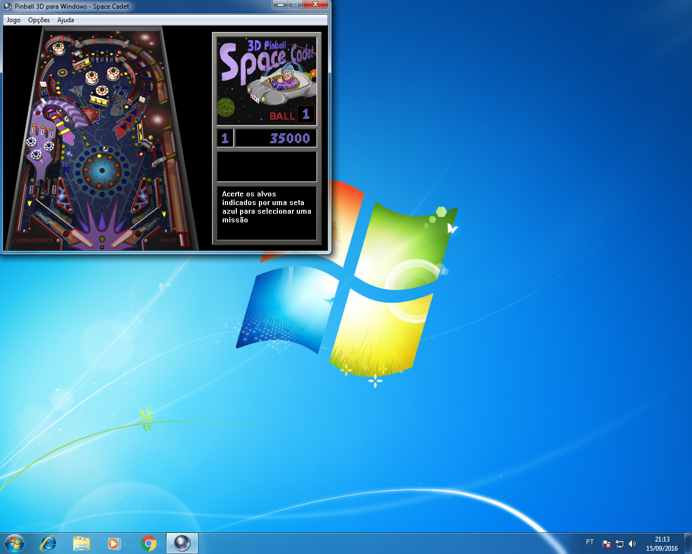

Pinball do Windows XP para Windows Vista/7 ou superior
Hora da Postagem:
15/09/2016 21:15:02

Quem usou o Windows XP por um bom tempo, com certeza se lembra do jogo de
Pinball, ou o Space Cadet. Era um jogo básico de Pinball, mas que muitos
classificam ele como o melhor jogo que vinha com o sistema, e até chamam-o
de o melhor jogo que já veio com o Windows. O jogo que inicialmente foi
distribuido com o Windows 95 Plus!, um pack com add-ons para o Windows 95,
incluiu o jogo. Posteriormente no Windows NT, ele se tornou jogo original do
Windows, e consolidou-se no Windows XP. Teve se triste fim no Windows Vista,
quando cortaram-o do sistema. O motivo teria sido um certo problema no jogo
quando foi feito o port, para o Windows Vista, porém é possível usá-lo
normalmente no Windows 7 (Não pude testar no Windows Vista, nem Windows 8 ou
superior). Enfim, recentemente tive instalar o Windows XP em meu computador,
e aproveitei a oportunidade para copiá-lo para um Pen Drive e depois fiz o
Upload no Media Fire. Então, não perca tempo, e baixe o jogo! Pinball
do Windows XP
Obs: Talvez seja necessária colocar compatibilidade com o Windows XP
(Advinhe porque? :P)